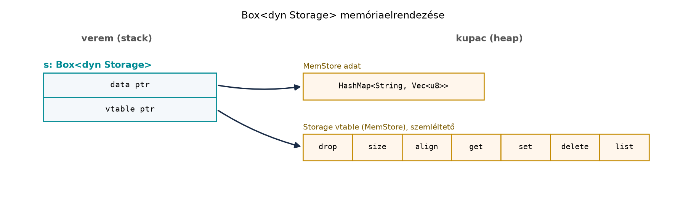

C++-ban a futásidőben kiválasztott viselkedés klasszikus eszköze az
absztrakt osztály virtuális függvényekkel. Például egy
Storage interfészt implementáló MemStorage és
FileStorage közül a konfiguráció alapján választunk, és a
hívó csak az absztrakt osztályt látja:
struct Storage {
virtual ~Storage() = default;
virtual std::optional<std::string> get(const std::string& key) const = 0;
virtual void set(const std::string& key, const std::string& value) = 0;
};
std::unique_ptr<Storage> create_storage(const std::string& kind) {
if (kind == "mem") return std::make_unique<MemStorage>();
if (kind == "file") return std::make_unique<FileStorage>();
throw std::runtime_error("unknown kind");
}A Rust válasza erre a dyn Trait: a trait-objektum.
Ugyanúgy futásidőben hívódik a megfelelő implementáció, de nincs
virtuális öröklés, nincs kézzel írt virtuális destruktor, és a
típusrendszer továbbra is kikényszeríti a biztonsági szabályokat.
Definíció. A trait-objektum
(trait object) egy olyan dinamikus típus, amelyet a
dyn Trait jelöl. Fordítási időben nem ismerjük a konkrét
típust, csak azt, hogy az adott traitet implementálja. Mivel a
dyn Trait mérete nem ismert fordítási időben, ezért a
Rust-ban unsized (DST) típus: csak mutatón vagy referencián
keresztül használható, például &dyn Trait,
&mut dyn Trait, Box<dyn Trait>,
Rc<dyn Trait> vagy Arc<dyn Trait>
formában.
Definíció. A &dyn Trait és a
Box<dyn Trait> úgynevezett kövér mutató (fat
pointer): két gépi szóból áll. Az első mutató a konkrét adatra, a
második a vtable-re mutat. A vtable a trait dyn-kompatibilis metódusaira
és a drop-rutinra mutató függvénymutatók táblája. A hívás tehát egy
indirekción keresztül történik, ez a dinamikus diszpécs.
Szabály. Csak dyn-kompatibilis (korábbi nevén object safe) traitből lehet trait-objektumot készíteni. Egy trait akkor dyn-kompatibilis (Rust Reference, „Dyn compatibility”), ha
Sized
nem szupertraitje (ezért nem az a Clone, a
Copy és a Default, és a Self
típusparaméterű PartialEq sem);where Self: Sized megkötéssel.Dispatcholható az a metódus, amelynek - nincs típusparamétere
(élettartam-paraméter lehet); - van receivere, és az
&Self, &mut Self,
Box<Self>, Rc<Self>,
Arc<Self> vagy ezek Pin-elt változata; -
a Self típus a receiveren kívül sem a paraméterei, sem a
visszatérési típusa között nem szerepel; - nem async fn és
nem -> impl Trait (mindkettő rejtett, metódusonként más
konkrét típust ad vissza); - nem kapott where Self: Sized
megkötést.
Az asszociált típus megengedett, de a trait-objektumban meg kell adni
(dyn Iterator<Item = u32>). A
where Self: Sized megkötésű (és ezért a vtable-ből
kikerülő) metódusok trait-objektumon nem hívhatók, de a trait
dyn-kompatibilis marad. A fn f(self) (érték szerinti
receiver) szintén nem dispatcholható trait-objektumon, de a trait emiatt
még dyn-kompatibilis; ha Box<dyn Trait>-en akarjuk
hívni, self: Box<Self> kell.
A hibás esetek rövid példái (mindegyik E0038, kivéve az
asszociált típust, ahol E0191):
trait A { fn make(&self) -> Self; } // Self a visszatérésben
trait B { fn cmp_with(&self, o: &Self); } // Self a paraméterben
trait C { fn map<U>(&self, u: U); } // típusparaméter
trait D { const N: usize; } // asszociált konstans
trait E { async fn fetch(&self); } // async fn
trait F: Sized { fn f(&self); } // Sized szupertrait
trait G { type Out; fn out(&self) -> Self::Out; } // dyn G nem elég: dyn G<Out = u32>A könyv traitjeinek besorolása: a Storage (Trait-ek és generikusok: sablonok és concepts
helyett; csak &self/&mut self,
nincs generikus), a Summary (Trait-ek
és generikusok: sablonok és concepts helyett), az
Animal és a Handler dyn-kompatibilis; az
Iterator dyn-kompatibilis, ha megadjuk az
Item-et; a Clone nem az (Sized),
és a Loader (lásd a feladatot) sem, mert a
Self-et adja vissza.
Szabály. A modern Rustban mindig írjuk ki a
dyn kulcsszót. A régi, dyn nélküli
&Trait forma a 2021-es és a könyv 2024-es editionjében
fordítási hiba (a 2018-as editionben még figyelmeztetés volt).
A C++ virtuális függvény és a Rust trait-objektum párhuzama jól látható egy egyszerű példán:
#include <iostream>
#include <memory>
#include <string>
struct Animal {
virtual ~Animal() = default;
virtual std::string speak() const = 0;
};
struct Dog : Animal {
std::string speak() const override { return "Vau"; }
};
struct Cat : Animal {
std::string speak() const override { return "Miau"; }
};
void describe(const Animal& a) {
std::cout << a.speak() << "\n";
}
int main() {
std::unique_ptr<Animal> p = std::make_unique<Dog>();
describe(*p);
}Rustban ugyanez kompozícióval és trait-objektummal:
trait Animal {
fn speak(&self) -> String;
}
struct Dog;
struct Cat;
impl Animal for Dog {
fn speak(&self) -> String { "Vau".to_string() }
}
impl Animal for Cat {
fn speak(&self) -> String { "Miau".to_string() }
}
fn describe(a: &dyn Animal) {
println!("{}", a.speak());
}
fn main() {
let p: Box<dyn Animal> = Box::new(Dog);
describe(&*p);
}A különbség nem csak szintaktikai. C++-ban a Dog a
Animal-ból öröklődik, a vtable az osztály része, és a
virtuális destruktorért a fejlesztő felel. Rustban a trait implementáció
teljesen különválik a struktúrától; a Dog nem „tudja”, hogy
Animal traitet implementál, és a
Box<dyn Animal> dropja a trait-objektum vtable-jén
keresztül hívja meg a konkrét típus dropját. Nincs tehát virtuális
destruktor-probléma.
A statikus és dinamikus diszpécs közötti döntés hasonló a C++ template és virtuális függvény közötti döntéshez:
| Szempont | Rust statikus | Rust dinamikus |
|---|---|---|
| Eszköz | generikus fn f<S: Storage>(s: &S) |
fn f(s: &dyn Storage) |
| C++ megfelelő | template<class S> |
virtuális függvény |
| Döntés ideje | fordítási idő (monomorfizálás) | futásidő (vtable-hívás) |
| Kódméret | nagyobb lehet | kisebb |
| Hívási költség | általában kisebb, jobban inline-olható | indirekt, kevésbé inline-olható |
| Típusok halmaza | nyitott, de a hívó ismeri a konkrét típust | nyitott, a hívónak elég a trait |
A generikus fn save<S: Storage>(s: &S, ...)
minden konkrét S-re külön kódot generál. A
fn save(s: &dyn Storage, ...) egyetlen kódot generál,
és a megfelelő implementációt a vtable-n keresztül éri el. Hot path
esetén a statikus változat gyakran gyorsabb, plugin-szerű bővíthetőség
esetén viszont a dinamikus a természetes.
Az alábbi trait nem dyn-kompatibilis, mert a clone_box
visszatérési típusa Self:
// Ez a változat szándékosan nem fordul le:
trait Cloneable {
fn clone_box(&self) -> Self;
}
fn clone_all(items: &[Box<dyn Cloneable>]) -> Vec<Box<dyn Cloneable>> {
items.iter().map(|item| item.clone_box()).collect()
}A fordító E0038 hibakód körüli üzenetet ad: a trait nem hozható létre
trait-objektumként, mert a metódus visszatérési típusa
Self. A pontos szöveg verziófüggő.
A javítás az, hogy a metódus ne konkrét Self-et adjon
vissza, hanem Box<dyn Cloneable>-t:
trait Cloneable {
fn clone_box(&self) -> Box<dyn Cloneable>;
}
#[derive(Clone)]
struct Point { x: i32, y: i32 }
impl Cloneable for Point {
fn clone_box(&self) -> Box<dyn Cloneable> {
Box::new(self.clone())
}
}Így a vtable-ben a clone_box visszatérési típusa már
ismert, és a hívó Box<dyn Cloneable>-t kap. Ha
viszont egy metódust csak a konkrét típuson akarunk meghívni, akkor
where Self: Sized megkötéssel kizárhatjuk a vtable-ből:
trait Animal {
fn speak(&self) -> String;
/// 'static objektum: a konkrét típus nem tartalmazhat nem 'static kölcsönzést.
fn into_box(self) -> Box<dyn Animal>
where
Self: Sized + 'static,
{
Box::new(self)
}
/// Kölcsönzött adatot is tartalmazhat: az objektum élettartama `'a`.
fn into_box_in<'a>(self) -> Box<dyn Animal + 'a>
where
Self: Sized + 'a,
{
Box::new(self)
}
}Az into_box nem hívható &dyn Animal-on
(a Self: Sized kizárja a vtable-ből), de a trait
dyn-kompatibilis marad. A Self: 'static korlát azért kell,
mert a Box<dyn Animal> típus alapértelmezett
objektum-élettartama 'static: a
Box<dyn Animal> valójában
Box<dyn Animal + 'static>. A korlát nélkül a fordító
E0310-et ad („the parameter type Self may not
live long enough”). A hivatkozások esetén az alapértelmezés más: az
&'a dyn Animal jelentése
&'a (dyn Animal + 'a). Ha az implementáló típus
kölcsönzést tartalmaz (például
struct Echo<'a>(&'a str)), az
into_box nem hívható rá (E0597), az
into_box_in viszont igen, mert az objektum élettartamát is
paraméterezi. A választás tehát tervezési döntés: 'static
objektum (szálak között, hosszú életű tárolókban) vagy kölcsönzést
engedő, rövidebb életű objektum.
A Box<dyn Trait> memóriaelrendezését mutatja az
ábra. A veremben a s változó két szót foglal: az első a
kupacon lévő konkrét adatra mutat, a második a vtable-re. A vtable a
konkrét típushoz tartozó függvénymutatókat tartalmazza.

64 bites platformon a Box<dyn Storage> tipikusan
16 bájt, szemben a közönséges Box<T> 8 bájtjával.
Ezért is érdemes elkerülni a felesleges dinamikus diszpécset: a fat
pointer tárolása és a vtable-indirekció is költség.
Box<dyn Storage>Munkakönyvtár: ~/rust-labor/rkv/
Ebben a laborban az rkv tárolóját tesszük futásidőben választhatóvá.
A kiinduló állapot a Asszociált típusok, koherencia,
operátorok és derive és a A standard trait-ek:
konverziók, formázás, Default, Deref, Borrow ellenőrzési pontja: a
Storage trait az rkv-core/src/storage.rs-ben
él (Trait-ek és generikusok: sablonok és concepts
helyett), a MemStore (a Store aliasa) és a
FileStore is implementálja. A traitet nem írjuk át: a
gyártófüggvény a kanonikus szerződésre épül, és egy
Box<dyn Storage + Send>-ot ad vissza. A
Send korlát azért kell már most, mert a Mutex, RwLock, csatornák és a megosztott rkv
alfejezet szálak közé helyezi a tárolót.
A Storage dyn-kompatibilis: minden metódusa
&self vagy &mut self receivert
használ, nincs típusparaméteres metódusa, és a Self sehol
nem szerepel a szignatúrákban (lásd a fenti szabálylistát). Ezt a
fordító is ellenőrzi, amint a gyártófüggvény
Box<dyn Storage + Send>-ot hoz létre.
Kódblokk — fájl: rkv-core/src/storage.rs ·
művelet: az elején a use sor cseréje, a fájl végére (a
mod tests elé) a gyártófüggvény · ellenőrzés:
cargo build -p rkv-core
use std::path::Path;
use crate::{Command, Error, FileStore, MemStore, Result};
/// Futásidőben választott háttér. `"file"` esetén a `dir` könyvtárban
/// a `state.json` snapshot és az `append.log` napló él (r023).
pub fn create_store(kind: &str, dir: &Path) -> Result<Box<dyn Storage + Send>> {
match kind {
"mem" => Ok(Box::new(MemStore::new())),
"file" => {
let store = FileStore::open(dir.join("state.json"), dir.join("append.log"))?;
Ok(Box::new(store))
}
other => Err(Error::InvalidCommand(format!("unknown store kind: {other}"))),
}
}Az ismeretlen háttér konfigurációs hiba, de az rkv Error
típusa négy változatú marad (I/O és szerializáció:
fájlok, pufferelés, serde), ezért az InvalidCommand
hordozza; egy külön változat bevezetése esetén minden
match-et és From-ot együtt kell frissíteni. A
crate gyökerében exportáljuk a függvényt:
Kódblokk — fájl: rkv-core/src/lib.rs · művelet:
a pub use storage::{...} sor cseréje · ellenőrzés:
cargo build --workspace
pub use storage::{apply, create_store, Response, Storage};A dinamikus diszpécset az alábbi integrációs teszt ellenőrzi. A
közös szerződésteszt (contract) egyetlen
&mut dyn Storage paramétert kap, ezért ugyanaz a
tesztsor fut a memóriabeli és a fájl-alapú háttéren is; új háttér
hozzáadásakor elég a listába felvenni:
Kódblokk — fájl: rkv-core/tests/dyn_store.rs ·
művelet: új fájl · ellenőrzés:
cargo test -p rkv-core --test dyn_store → 2 sikeres
teszt
use std::path::PathBuf;
use rkv_core::{create_store, Error, Storage};
fn fresh_dir(name: &str) -> PathBuf {
let dir = std::env::temp_dir().join(format!("rkv-dyn-{name}-{}", std::process::id()));
let _ = std::fs::remove_dir_all(&dir);
std::fs::create_dir_all(&dir).unwrap();
dir
}
/// Közös szerződésteszt: minden háttérnek ugyanígy kell viselkednie.
fn contract(store: &mut dyn Storage) {
store.set("kulcs".to_owned(), "érték".as_bytes().to_vec()).unwrap();
assert_eq!(store.get("kulcs").unwrap(), Some("érték".as_bytes().to_vec()));
assert!(store.delete("kulcs").unwrap());
assert!(!store.delete("kulcs").unwrap());
store.set("b".into(), b"2".to_vec()).unwrap();
store.set("a".into(), b"1".to_vec()).unwrap();
let keys: Vec<String> = store.list(None).unwrap().into_iter().map(|(k, _)| k).collect();
assert_eq!(keys, ["a", "b"]); // rendezett
}
#[test]
fn every_backend_satisfies_the_contract() {
for kind in ["mem", "file"] {
let mut store = create_store(kind, &fresh_dir(kind)).unwrap();
contract(&mut *store); // Box<dyn Storage + Send> -> &mut dyn Storage
}
}
#[test]
fn unknown_store_kind_is_an_error() {
let result = create_store("postgres", &fresh_dir("unknown"));
assert!(matches!(result, Err(Error::InvalidCommand(ref m)) if m.contains("postgres")));
}Futtatás:
cargo test -p rkv-core --test dyn_storeVárt kimenet (rövidítve):
running 2 tests
test every_backend_satisfies_the_contract ... ok
test unknown_store_kind_is_an_error ... okA create_store("mem", ..) egy
Box<dyn Storage + Send>-ot ad vissza, amely mögött
MemStore áll, és a set/get
hívások a vtable-n keresztül érik el a konkrét implementációt. A teszt a
hívó szemszögéből dolgozik: a konkrét típust nem ismeri.
Ellenőrzési pont. Az rkv-core a
create_store(kind, dir) -> Result<Box<dyn Storage + Send>>
függvényt exportálja; a mem és a file háttér
ugyanazt a közös szerződéstesztet teljesíti. A
cargo test --workspace az eddigi tesztek mellett az új
integrációs tesztet is sikeresen futtatja.
Továbbvitt eredmény. A create_store
gyártófüggvény és a Box<dyn Storage + Send> dinamikus
tároló beépül a későbbi fejezetekbe: a Szálak, Send
és Sync: data race fordítási időben kizárva alfejezetben a tárolót
szálak közé kell elhelyezni, ahol a dyn Storage + Send
határ kulcsszerepet kap; a Az rkv hálózati szerver:
TCP, protokoll, kecses leállás ezen a gyártófüggvényen keresztül
választja ki futásidőben a memóriabeli vagy fájl-alapú hátteret; a Záróprojekt: az rkv teljes rendszerként pedig ezt a
dinamikus API-t fűzi teljes rendszerré.
A Box<dyn Storage> mellett a másik gyakori
megoldás egy enum, amely a háttereket zárt halmazként
sorolja fel, és maga is implementálja a Storage-ot:
enum StorageBackend {
Mem(MemStore),
File(FileStore),
}
impl Storage for StorageBackend {
fn get(&self, key: &str) -> Result<Option<Vec<u8>>> {
match self {
StorageBackend::Mem(m) => Storage::get(m, key),
StorageBackend::File(f) => Storage::get(f, key),
}
}
// set, delete, list: ugyanígy, minden ágban a megfelelő háttérre delegálva
}A kettő közötti döntés a zárt–nyitott halmaz elvén alapul. Az
enum fordítási időben rögzíti az összes lehetséges
változatot: ha új hátteret adunk hozzá, az összes match
frissítését a fordító kikényszeríti, ami kimerítőségi hibákkal jár. A
dyn Trait viszont nyitott halmazt ad: más crate-ek is
implementálhatják a Storage traitet, és a kódunk
változatlanul tudja használni a trait-objektumot. C++-ban ez a
std::variant és az absztrakt osztály közötti választásnak
felel meg.
Az rkv esetében a külső bővíthetőség és a szerver futásidejű
konfigurációja miatt a dyn Storage a hasznosabb
határfelület, de a parancsok feldolgozásához például a
Command enum továbbra is zárt halmaz marad.
Minden absztrakciót trait-objektummá tenni. A
Rust nem kényszerít virtuális diszpécsre; a generikus
fn f<S: Storage>(s: &S) gyakran gyorsabb és
legalább ilyen rugalmas. Akkor használj dyn Trait-et, ha a
konkrét típus valóban csak futásidőben ismert, vagy ha heterogén
kollekciót kell tárolni.
Nem figyelni az object safetyre. C++-ban egy
absztrakt osztály metódusa visszaadhat
std::unique_ptr<Base>-t, és ez rendben van; Rustban a
Self visszatérés nem object-safe. A szokásos javítás
Box<dyn Trait> visszatérés vagy
where Self: Sized.
A fat pointer méretének figyelmen kívül hagyása.
A Box<dyn Storage> nem 8 bájt, hanem tipikusan 16
bájt 64 bites rendszereken. Nagy trait-objektum-vektoroknál ez számít,
és a std::mem::size_of használata meglepő lehet.
A dyn Trait és a konkrét típus
keverése. A Box<dyn Storage> nem
Box<MemStore>. Ha le kell kérdezni a konkrét típust,
az Any downcastingot igényelne, de idiomatikus Rustban erre
ritkán van szükség; ehelyett a trait felületét érdemes
bővíteni.
trait Loader {
fn load(&self) -> Self;
}
fn load_all(items: &[Box<dyn Loader>]) -> Vec<Box<dyn Loader>> {
items.iter().map(|i| i.load()).collect()
}Válaszold meg, hogy lefordul-e, és ha nem, hogyan javítanád.
Írd át Rustra a következő C++ absztrakt osztályt és a hívást:
struct Handler {
virtual ~Handler() = default;
virtual int handle(int x) const = 0;
};
void run(const Handler& h) { std::cout << h.handle(42); }Készíts Box<dyn Handler>-t egy konkrét típussal,
és hívd a run Rust-megfelelőjét.
Egészítsd ki a create_store függvényt egy harmadik,
"readonly" háttérrel: egy olyan
Storage-implementációval, amely a get és a
list hívásokat egy MemStore-ra delegálja, a
set és a delete hívásokra pedig
Err(Error::Io(..)) hibát ad
(io::ErrorKind::PermissionDenied). Vedd fel a
"readonly" nevet a dyn_store teszt listájába
úgy, hogy a közös szerződésteszt helyett egy külön teszt ellenőrizze: az
írás hibát ad, az olvasás működik.
Adott két függvény:
fn process_mem(store: &MemStore, key: &str) -> Result<Option<Vec<u8>>> { Storage::get(store, key) }
fn process_file(store: &FileStore, key: &str) -> Result<Option<Vec<u8>>> { Storage::get(store, key) }Helyettesítsd őket egyetlen, &dyn Storage paraméterű
függvénnyel. Milyen módosítások szükségesek a hívóknál?
Nem fordul le, mert a loader visszatérési típusa
Self, ezért a trait nem dyn-kompatibilis. Javítás:
trait Loader {
fn load(&self) -> Box<dyn Loader>;
}trait Handler {
fn handle(&self, x: i32) -> i32;
}
struct AddOne;
impl Handler for AddOne {
fn handle(&self, x: i32) -> i32 { x + 1 }
}
fn run(h: &dyn Handler) {
println!("{}", h.handle(42));
}
fn main() {
let h: Box<dyn Handler> = Box::new(AddOne);
run(&*h);
}A &*h a Box<dyn Handler>-ből
&dyn Handler-t hoz létre a deref coercion
segítségével.
Kódblokk — fájl: rkv-core/src/storage.rs ·
művelet: új típus és új ág a create_store-ban · ellenőrzés:
cargo test -p rkv-core --test dyn_store
/// Csak olvasható háttér: az írások hibát adnak.
pub struct ReadOnly(MemStore);
fn denied() -> Error {
Error::Io(std::io::Error::new(
std::io::ErrorKind::PermissionDenied,
"a tároló csak olvasható",
))
}
impl Storage for ReadOnly {
fn get(&self, key: &str) -> Result<Option<Vec<u8>>> {
Storage::get(&self.0, key)
}
fn set(&mut self, _key: String, _value: Vec<u8>) -> Result<()> {
Err(denied())
}
fn delete(&mut self, _key: &str) -> Result<bool> {
Err(denied())
}
fn list(&self, prefix: Option<&str>) -> Result<Vec<(String, Vec<u8>)>> {
Storage::list(&self.0, prefix)
}
}
// a create_store match-ében, az "other" ág elé:
"readonly" => Ok(Box::new(ReadOnly(MemStore::new()))),Teszt a dyn_store.rs-be:
#[test]
fn readonly_backend_rejects_writes_but_reads() {
let mut store = create_store("readonly", &fresh_dir("ro")).unwrap();
assert!(matches!(store.set("k".into(), b"v".to_vec()), Err(Error::Io(_))));
assert!(matches!(store.delete("k"), Err(Error::Io(_))));
assert_eq!(store.get("k").unwrap(), None);
assert!(store.list(None).unwrap().is_empty());
}A ReadOnly nem teljesíti a közös szerződéstesztet (az
set-et elutasítja), ezért kapott külön tesztet; ez a
szerződés kifejezett kivétele, nem rejtett eltérés.
A közös függvény:
fn process(store: &dyn Storage, key: &str) -> Result<Option<Vec<u8>>> {
store.get(key)
}A hívóknál az &MemStore és
&FileStore helyett elég
&dyn Storage-ot átadni; az &MemStore
és az &FileStore automatikusan
&dyn Storage-gá kényszerül (unsized coercion), egy
Box<dyn Storage + Send>-ból pedig
&*s készít ilyet, például
let s = create_store("mem", dir)?; process(&*s, "kulcs").
A hívó oldalán így nem kell két külön függvényt karbantartani.
A trait-objektum (dyn Trait) a Rust dinamikus diszpécs
eszköze, a C++ virtuális függvények párja. A &dyn Trait
és a Box<dyn Trait> kövér mutató: adatmutatóból és
vtable-mutatóból áll. Csak dyn-kompatibilis traitből hozható létre
trait-objektum: nincs Sized szupertrait, asszociált
konstans vagy GAT, a metódusok pedig vagy dispatcholhatók (nincs
típusparaméter, Self csak a receiverben, nem
async), vagy where Self: Sized megkötéssel
kizártak. A Box<dyn Trait> alapértelmezett
objektum-élettartama 'static. A statikus generikus
(impl Trait/<T: Trait>) fordítási időben
monomorfizál, a dyn Trait futásidőben, vtable-n keresztül
hív. Az enum zárt, a trait-objektum nyitott halmazt modellez. A laborban
az rkv-hoz hozzáadtuk a create_store(kind, dir)
gyártófüggvényt, amely
Result<Box<dyn Storage + Send>>-t ad vissza, és
a dyn_store integrációs tesztet, amelyben minden háttér
ugyanazt a közös szerződéstesztet teljesíti. Ez a dinamikus
Storage API a Szálak, Send és Sync,
a Az rkv hálózati szerver és a Záróprojekt alapja.
Az alfejezet a trait-objektumok, a dyn szintaxis, a
dyn-kompatibilitás és a vtable-alapú diszpécs stabil nyelvi részeire
épül, amelyeket a Rust Reference és a The Rust Programming
Language ír le. A hibaüzenetek szövege a rögzített toolchainre
(Rust 1.99.1) vonatkozik. A labor a korábbi rkv-laborokban definiált
Storage, MemStore, FileStore és
Error típusokat használja; a FileStore::open a
snapshot- és naplóútvonalat veszi át. Az rkv-crate-en kívül új külső
függőség nem szükséges.